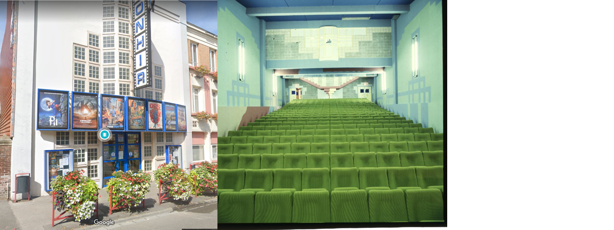

Gilles Dupré - oeuvre architecturale¶
Cette page regroupe de nombreux projets architecturaux de mon père, Gilles Dupré, constuits dans la région Grand Est. Les photos mélangent des photos d’archives et des photos tirées de Google Maps. La plupart des lieux sont localisés.
J’ai passé pas mal de temps à parcourir les rues avec Google Street View, à regarder les cartes IGN, plus précises que celles de Google, à m’extasier devant les traces GPS d’OpenStreetMap, inutiles pour ma recherche, mais intrigantes.
Je n’imaginais que faire la liste des constructions de mon père, soit aussi fastidieuse. Les adresses des constructions sont rarement notées. J’ai passé pas mal de temps à chercher un toit dans le village de Lonny qui puisse ressembler à une maison que je ne connaissais que grâce à deux photos. J’ai sillonné virtuellement dans les rues du village depuis Paris, en me demandant si sa maison n’avait pas été détruite ou refaite de façon méconnaissable. Je n’ai pas retrouvé la trace d’une maison qu’il a aménagé à Carolles. Je sais pourtant qu’elle existe puisque j’y ai déjeuné il y a très longtemps. Je me souviens encore du premier étage, une avancée courbe en surplomb du de la salle à manger.
Témoin du temps qui passe, j’ai mis les pieds dans trois maisons que mon père a construite. Toutes étaient en bordure de village à l’époque où elles furent construites. Elles ne le sont plus maintenant.
Bâtiments¶
1976 - Base nautique des Vieilles Forges¶
publication dans la revue AC en 1981
1978 - Base nautique de Bairon¶
rénovation ou destruction Au lac de Bairon, la base départementale sera rasée
publication dans le Guide de l’Architecture en France, 1945-1983, éd. du Moniteur
1980 - Caserne gendarmerie - Raucourt¶
Maître d’ouvrage : département des Ardennes
Mission M2
1983 - PARC DEPARTEMENTAL DE L’EQUIPEMENT DES ARDENNES¶
Maître d’ouvrage : DDE des Ardennes
Année : 1983
Surface : 4 612 m²
Coût : 1 234 837 €

1984 - 23 pavillons à Rancennes¶
Maître de l’ouvrage Régie Foncière E.D.F
Coût 12 MF
Réalisation 1983-1984
Mission Mission M1
Surface 3.000 m²

1984 - Cinéma à Hirson¶
1984 - Salle de spectacles à Revin¶
Maître de l’ouvrage : Ville de Revin
Coût : 6 MF
Mission : Mission M1
Surface : 1.200 m²

1985 - Groupe Scolaire à Givet¶
Maître d’ouvrage : Ville de Givet
Dévolution: Concours
Coût : 14 MF

1985 - Gymnase les Mazures¶
Maître d’ouvrage : Commune de LES MAZURES
- SurfaceAire de sport1 160 m², Foyer - club140 m² Annexes :
900 m²
Coût : 789 239 €
Mode de dévolution : Appel d’offre ouvert

1986 - Service restauration du centre spécialisé de Bélair¶
Maître de l’ouvrage : Centre Hospitalier de Bélair.
Maître d’oeuvre : G.Dupré
Mission : M1
Coût : 7 MF
Surface : 1.500 m²
Nombre de couverts : 600

1987 - Bureau de poste à la Francheville¶
Maître d’ouvrage : Commune de La Francheville
Surface : 236 m²
Coût : 152 449 €
Mode de dévolution : Sur dossier

1988 - Hôtel de Police de Reims¶
Maître d’ouvrage : Ministère de l’Intérieur - SGAP DE METZ
Coût H.T. : 11 586 125 €
Maîtrise d’oeuvre : Cabinet Gilles DUPRE, architecte CHODACZEK, BET
Surface : 12 167 m²
1990 - Extension du lycée Chanzy à Charleville¶
Maître de l’ouvrage : Région Champagne Ardenne
Coût : 762 245 €
1992 - Lycée d’Enseignement Général et Technique Châlons sur Marne¶
Maître d’ouvrage : Région Champagne-Ardenne
Dévolution Concours
Réalisation 1993/1994
Coût 95 MF
Associés Gottardi-Claudel (suivi de chantier)

1993 - Extension et réhabilitation de la station d’épuration de Charleville-Mézières¶
Maître de l’ouvrage Ville de Charleville-Mézières
Coût 6 MF

1995 - Equipements sportifs au Lycée J.Talon à Châlons-en-Champagne¶
Maître de l’ouvrage Région Champagne Ardenne
Surface 1.900 m²
Coût 1 021 408.00 €
Réalisation 1995 Concours
Mission MOP - Mission de base

1998 - Extension du groupe scolaire Gambetta à Rethel (08)¶
Maître d’ouvrage : ville de Rethel
Gilles Dupré et Caroline De Zotti
Montant : 2,7 MF

1998 - Extension du complexe sportif de la poterie Prix les mézières¶
Maître d’ouvrage : Commune de Prix Les Mézières
Surface : 244 m²
Coût : 114 337 €
Mode de dévolution : Marché public de prestations
1999 - Restructuration Commissariat Saint-Dizier¶
Maître d’ouvrage : Ministère de l’Intérieur - SGAP DE METZ
Coût H.T. : 686 021 €
- Maîtrise d’œuvreCabinet Gilles DUPRE, architecte GECIBAT, BET
Structure, BECIT, BET Fluides MANESSE, BET
Surface : 1 300 m²
2002 - Collège Léo Lagrange - Création d’un préau¶
Maître d’ouvrage : Conseil Général des Ardennes
Coût : 152 450€
Mission : création d’un préau, travaux d’entretien et rénovation
2004 - Salle Omnisport à Lumes¶
- localisation
chemin de l’Etang 08000 Lumes (adresse de l’époque)
Maître d’ouvrage : Communauté de Communes des Balcons de Meuse
Dévolution Concours - Mission de base avec EXE
Coût 914 694.10 €
Surface 1.600 M²

2005 - IUT à Charleville¶
- Maître de l’ouvrage Rectorat de l’Académie de Reims 1 rue Navier -
51092 REIMS CEDEX
Maître d’ouvrage délégué D.D.E des Ardennes
Maître d’œuvre Gilles Dupré (conception et réalisation)
Coût 1 905 613 €
Mission Mission de base avec exécution Surface 1.700 m²

2008 - Centre Hospitalier de Rethel¶
Maître de l’ouvrage Centre Hospitalier de RETHEL
Maître d’ouvrage délégué D.D.E des Ardennes
Maître d’œuvre Gilles Dupré (conception et réalisation)
Coût 914 694.10 €
Réalisation 1996
Mission Mission loi MOP
Surface 1000 m²
2011 - 30 logements rue des mésanges à Charleville¶
Maître d’ouvrage : Espace Habitat
2012 - Commissariat de Police à Charleville¶
Maître d’ouvrage : Ministère de l’Intérieur - SGAP DE METZ
Coût H.T. : 3 928 870 €

Maisons individuelles¶
Maison Borrewater (non localisée)¶

Neufmanil (Maison Dequen, avant 1990)¶

1998 - Maison La Francheville (Courty)¶
Maison particulière à Vrigne aux Bois (non localisée)¶

5 logements, 3 garages (non localisé)¶
Maître d’ouvrage : O.P.A.C. de Châlons en Champagne
Surface : Logements : 847m², Aménagement : 31 402 m²
Coût : 737 916 €
Mode de dévolution : Appel à candidature

Maison à Lonny (non datée)¶
localisation probable, les vues du ciel de l’IGN sont plus précises Lonny, qu’on retrouve sur Bing Maps (Lonny)
11 logements à Givet (non datés, non localisé)¶
Maître d’ouvrage : Espace Habitat

Réhabilitation de 5 logements dans un corps de ferme à Rocroi (non daté)¶
Maître d’ouvrage : OPAC des Ardennes
1993 - Réalisation de 90 logements à Reims (non localisé)¶
Maître d’ouvrage : effort Rémois
Réalisation de 90 logements à Reims (51)
Maître de l’ouvrage L’Effort Rémois
Coût 43 MF
Prestations Conception-Réalisation Avec S.P.I.E


{kind=link}
{kind=link}
){kind=link}
{kind=link}
{kind=link}
{kind=link}
{kind=link}
){kind=link}
{kind=link}
{kind=link}
{kind=link}
){kind=link}
{kind=link}
{kind=link}
{kind=link}
{kind=link}
{kind=link}
{kind=link}
{kind=link}